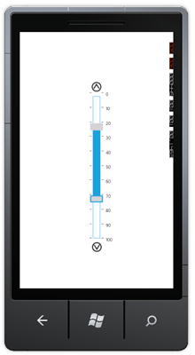

You can set the maximum and minimum value of the Range Slider as needed.
Use Case Scenarios
When you set the time range to filter a list of song based on the publishing year, you can set the total range of your list as minimum and maximum range.
Setting Maximum and Minimum Value
You can set the maximum and minimum value of the Range Slider using the Maximum and the Minimum properties. By default this is set as 0 to 100.
The following code illustrates how to set the maximum and minimum value of the Range Slider:
|
[C#] RangeSlider slider1 = new RangeSlider(); slider1.Maximum = 100; slider1.Minimum = 0; |
|
[XAML] <sync:RangeSlider x:Name="slider1" Maximum="100" Minimum="0" TickFrequency="50" LabelOrientation="AboveTicks" /> |

Figure 118: Customized Maximum and Miniumum Range